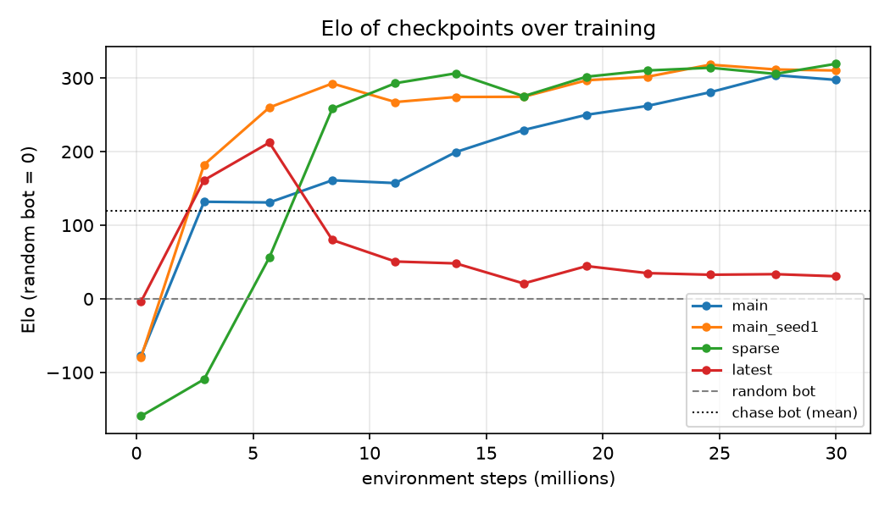
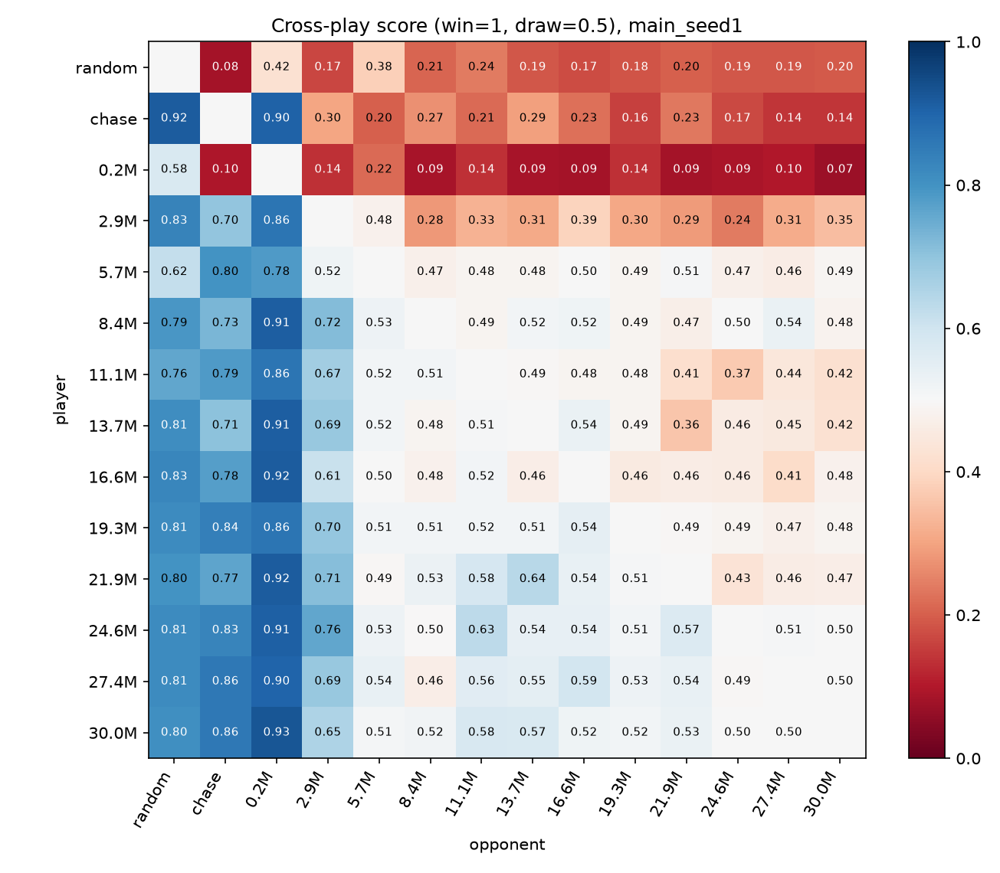
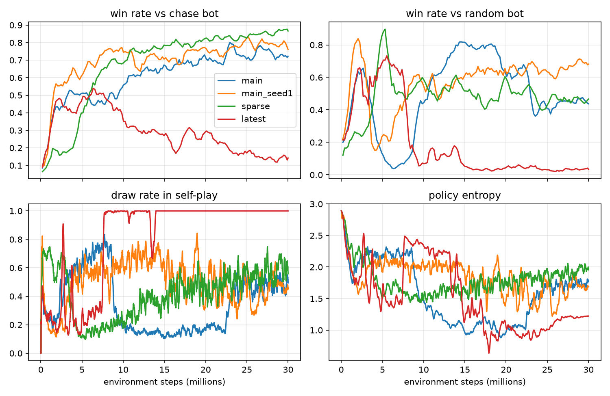
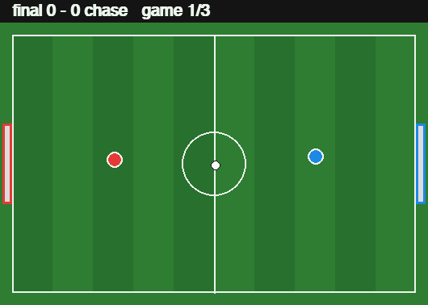

Loading models…
Controls: arrow keys or WASD to move, Space to kick, P to pause, R to restart. Lower the speed if the agent is too quick.
How it works
The game is a small top-down physics simulation: two round players, a ball with friction, walls that bounce, and goals on each end. Each player picks one of 18 discrete actions (8 move directions or stay, each with or without a kick). Instead of pixels, the agent sees a 16-number vector: positions and velocities of both players and the ball, from its own point of view (the field is mirrored so it always attacks to the right).
The agent is a small two-layer MLP trained with PPO on 64 games in parallel on a laptop CPU. It only ever plays against copies of itself. To keep it from forgetting old tricks, half of the games each rollout are against snapshots sampled from a pool of its own past versions. Early on, a small shaping reward for moving toward the ball and pushing the ball toward the opponent goal helps it get started; that bonus fades to zero halfway through training, leaving only the +1/−1 goal reward.
The physics you are playing in here is a line-by-line JavaScript port of the Python training environment (checked step-for-step by a test), and the network runs directly in your browser.
Results
Four 30M-step runs, each about 16 minutes on an M5 MacBook Air: the main setup with two seeds, a sparse-reward-only ablation, and a "latest copy only" ablation without the opponent pool.




| Final agent (1000 games each) | vs random W / D / L | vs chase bot W / D / L |
|---|---|---|
| Pool self-play, seed 1 (Pro) | 70 / 28 / 2 % | 80 / 7 / 14 % |
| Pool self-play, seed 0 | 47 / 51 / 2 % | 71 / 6 / 23 % |
| Sparse reward only | 46 / 53 / 1 % | 86 / 3 / 12 % |
| Latest-only self-play | 3 / 95 / 2 % | 14 / 7 / 79 % |